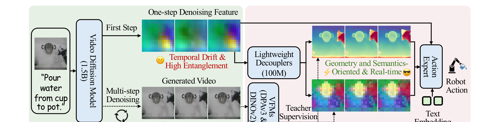
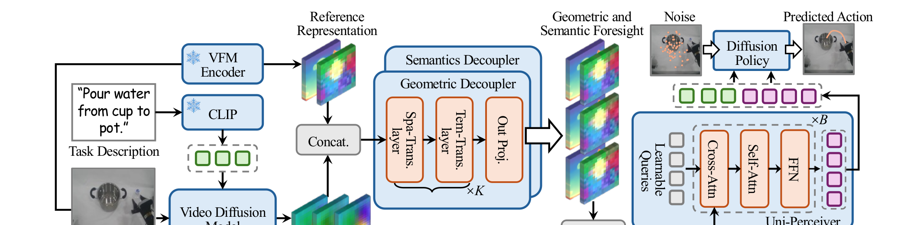
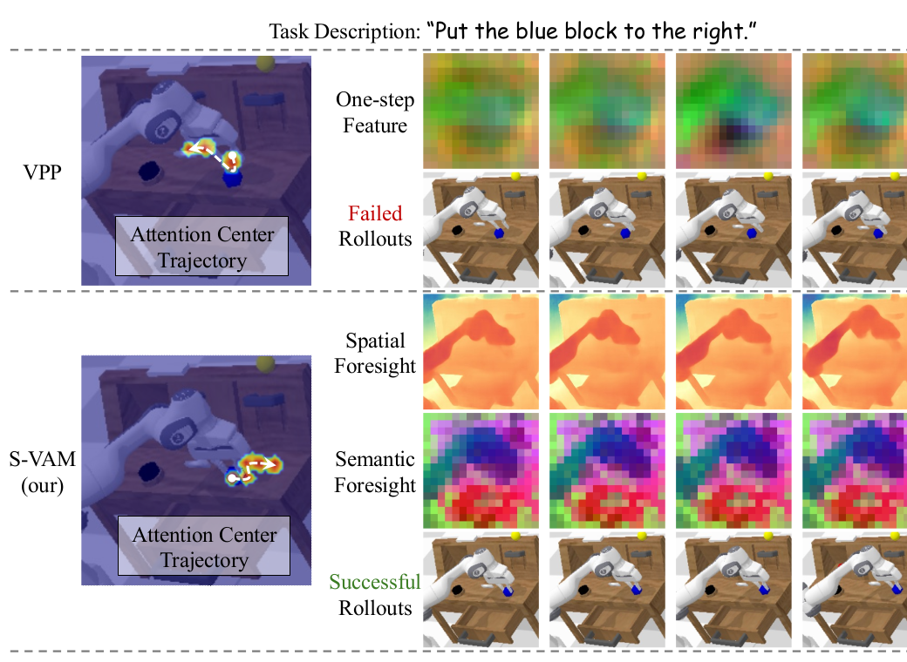
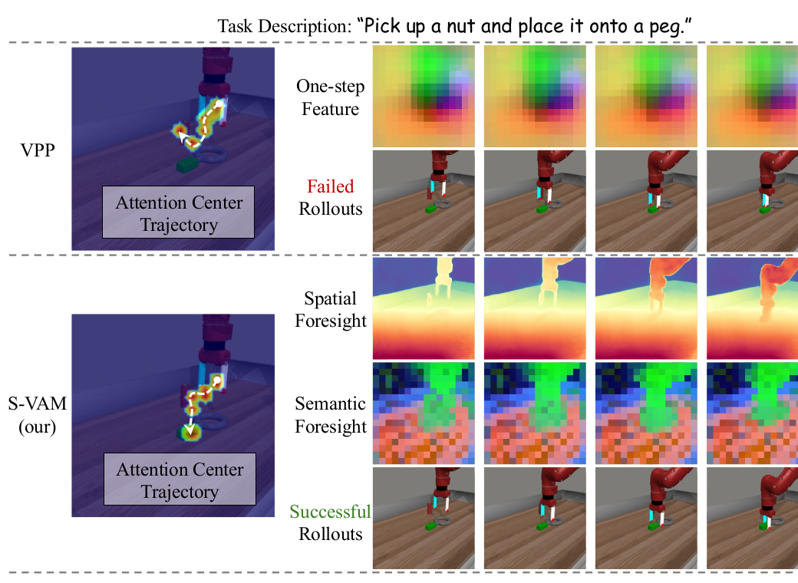
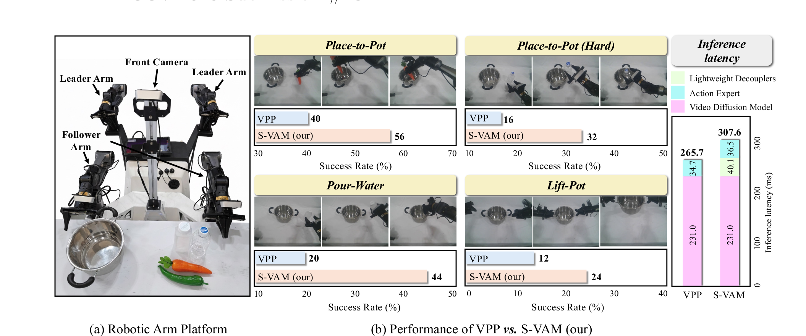

Abstract
Video action models are promising for robot learning, but existing methods usually trade off between high-quality multi-step foresight and efficient one-step inference. S-VAM addresses this gap with a shortcut video-action model that predicts coherent geometric and semantic future representations in a single forward pass. During training, lightweight decouplers are supervised by vision foundation model features extracted from the diffusion model's own multi-step generated videos. This self-distillation condenses structured generative priors into efficient one-step inference, enabling more accurate and practical robotic control in both simulation and the real world.
Introduction
S-VAM starts from a central tension in video-action modeling: one-step denoising features are efficient but temporally unstable and highly entangled, while multi-step generated videos provide coherent future structure at too high a latency for practical control. Our key observation is that the multi-step generative prior can supervise a lightweight shortcut. Instead of running slow iterative video generation at test time, S-VAM directly predicts geometry-aware and semantics-aware foresight that serves as a compact action blueprint.

Method
S-VAM extracts one-step denoising features from a video diffusion backbone and routes them through semantic and geometric decouplers. These modules are trained with teacher targets produced by vision foundation models on the diffusion model's own multi-step generated videos. The distilled foresight features are aggregated with the original observation context by a Uni-Perceiver, then consumed by the downstream diffusion policy for action prediction. This design preserves structured future information while keeping inference efficient enough for real-time control.

Experiments
Simulation Benchmarks


Qualitative Comparison


Real-World Experiments

BibTeX
@inproceedings{svam2026,
title={S-VAM: Shortcut Video-Action Model by Self-Distilling Geometric and Semantic Foresight},
author={Anonymous},
booktitle={ECCV 2026 Submission},
year={2026}
}